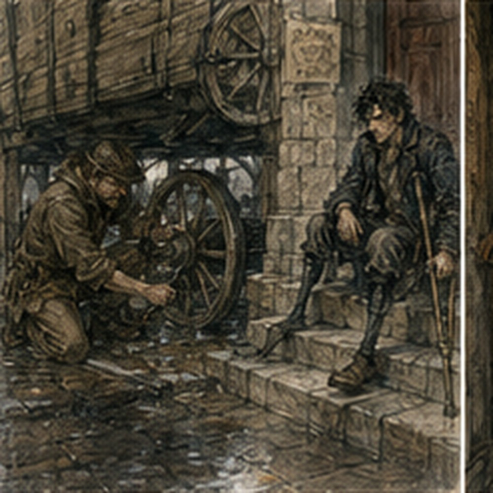
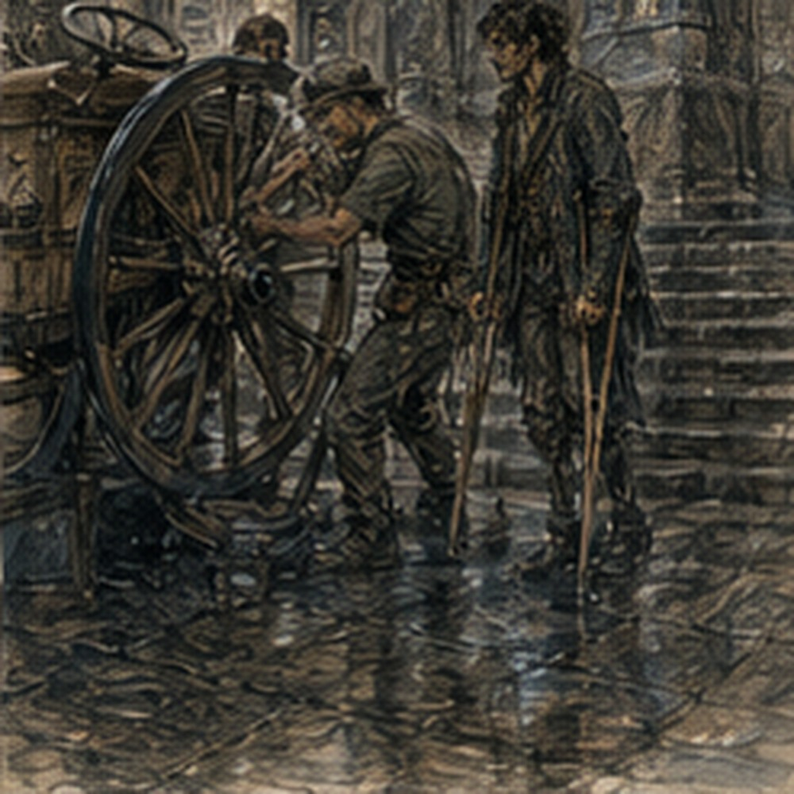

No magic. Again. This was becoming a profession. I woke with both hands normal. Right calf normal. Residual limb quiet. Phantom foot present. No thumb. No fingers. No Hessa until tomorrow. Fine. The yellow bird was still on the table.
I had started noticing that every morning. That was probably how objects became furniture. I ate. The keeper looked at my shirt. Brown. He opened his mouth.
“No.”
He closed it. Victory. Outside, Carrow was wet. Not raining. Recently raining. The stones held it. Crutch tips disliked that. I went slower. No destination yet. That was becoming less alarming too. At the Guild, a cart was blocking half the front.

Not Guild cart. Courier cart. Long bed. High rear wheel. Canvas rolled along one side. A man was under it. Boots only. I knew the boots.
“Sevren.”
From beneath the cart:
“No.”
“You are under your cart.”
“No.”
“Your boots are visible.”
“That proves nothing.”
I waited. He slid out. Sevren had grease on one cheek.
“That is unfortunate.”
“You found me.”
“Yes.”
“Go away.”
“No.”
He sat up.
“Why?”
“I don't know.”
“Good reason.”
He looked at my crutches. Then at the wet street.
“You walk here?”
“Yes.”
“Bad road.”
“This is a street.”
“Bad street.”
He stood. The cart wheel had its outer cap removed. A pin lay on a folded rag.
“What happened?”
“Nothing.”
“Then why is it apart?”
“Because I prefer fixing things before the part where something happens.”
Reasonable. Annoying.
“You doing the north run?”
He looked at me.
“Eventually.”
“That is not a date.”
“No.”
“You said next week.”
“I say many things.”
“That was more than a week ago.”
“Then I lied.”
“You did not know.”
“Same result.”
Not same. I let it go. Mostly. He crouched again. I watched. He reseated the pin. Tapped it. Turned the wheel. Stopped. Tapped again.
“You changed the route?”
He looked up.
“Why?”
“You said route wasn't final.”
“It still isn't.”
“That seems inefficient.”
“That is roads.”
I considered this.
“What changed?”
“Bridge.”
“Which?”
“The north bridge.”
“There are several.”
“The one you mean.”
That was offensive.
“The stone bridge after the second rise?”
“No.”
“The timber bridge before the toll house?”
He paused.
“What toll house?”
I looked at him.
“The toll house.”
“What toll house?”
“North road. Before the old timber bridge. Gray roof. Two gates. Used to charge freight by axle width.”
Sevren stared.
“Used to?”
“Yes.”
“How old are you?”
“Fuck you.”
He laughed. Good.
Then:
“There hasn't been a toll house there since before I started running north.”
I stopped. No. That could mean several things.
“When did you start?”
“Years.”
“How many?”
“Enough.”
“That is not useful.”
“It burned.”
“The toll house?”
“Apparently.”
“When?”
“Before me.”
I looked at the cart. Then north. Not actually visible. Memory arrived. Gray roof. Two gates. Man with one ear. Freight line. Old Greg waiting behind a wagon loaded with iron pipe.
The clerk measuring axle width with a marked stick because somebody had tried to file down the outer rims. Real. Clear. Not recent. Of course.
“What replaced it?”
“Nothing.”
“That bridge still charges.”
“No.”
“It did.”
“Apparently.”
“Then who maintains it?”
Sevren wiped grease from his fingers.
“Not the same people who used to.”
“Who?”
“Depends which bridge you mean.”
“The timber bridge.”
“Gone.”
I looked at him.
“Gone?”
“Flood.”
“When?”
“Three winters ago.”
That was worse.
“What replaced it?”
“Stone crossing lower down.”
I knew the lower crossing. Bad grade. Narrow. Soft shoulder in rain.
“You don't take freight there.”
“Yes.”
“No.”
“Yes.”
“The turn is too tight for a long cart.”
“Was.”
“What does that mean?”
“They cut the bank.”
I hated everything. Sevren watched me.
“You know this road?”
“I knew this road.”
There. Different sentence. He nodded as though this explained more than it did.
“Come look.”
He pulled a folded route sheet from the cart box. Not a map. List. Stops. Distances. Notes. Marks. He held it low enough for me to see. North gate. First rise. Old quarry fork.
Lower stone crossing. Second village. Return east spur. I recognized enough to be dangerous. Not literally. Probably.
“That fork doesn't save time.”
“It does now.”
“No. The quarry road narrows after the cut.”
“Quarry expanded.”
“What?”
“They widened the road.”
“Why?”
“Quarry.”
“That is circular.”
“It is a quarry road.”
I looked again. There was another notation.
“East spur?”
“New grading.”
“That used to wash out.”
“Still does.”
“So why?”
“Faster when dry.”
“It rained.”
“Here.”
He pointed north with his chin.
“Didn't there.”
I looked at the sky. This was useless. Weather had geography. Known problem. Still irritating.
“You carrying two villages?”
“Three now.”
“You said two.”
“Third added.”
“Why?”
“Because they pay.”
I stared at the sheet.
“Who?”
“No.”
“I meant who added it.”
“Same answer.”
Professional boundary. Fine.
“What are you carrying?”
“No.”
“Weight?”
He looked at me.
“Why?”
“Because I am asking whether the lower crossing is sensible.”
“No, you're trying to solve my route.”
“That is not the same thing.”
“It is exactly the same thing.”
I sat on the cart edge. Carefully.
“Your rear axle load matters.”
“Yes.”
“The lower crossing used to pitch left after rain.”
“Used to.”
I hated that word. Sevren smiled.
“You keep saying things like a dead surveyor.”
I went still. Not because he knew. He did not. He was making fun of me.
“That's rude.”
“Accurate?”
“No.”
“Good.”
He went back under the cart. I kept looking at the route sheet in his hand. He had not taken it away. That meant I could read it. Probably.
“Your return is longer.”
“Yes.”
“Why?”
“Bridge.”
“Which bridge?”
He laughed from under the cart.
“Now you care.”
“I always cared.”
“That's the problem.”
I waited. He slid out again.
“North bridge has one-way freight hours now.”
“What?”
“Carters east in the morning, west in afternoon.”
“Why?”
“Too narrow after reinforcement.”
“They reinforced it by making it worse?”
“They reinforced it by keeping it standing.”
“That is not the same thing.”
“Roads don't care.”
I knew the bridge. Old Greg knew it. Wide enough for two carts if both drivers were not idiots. Apparently not anymore.
“What happened?”
“Central support cracked two years ago. They braced it. Lost width.”
“And nobody replaced it?”
“Somebody plans to.”
“Who?”
“People who plan bridges.”
“That is not a profession.”
“It absolutely is.”
I looked at him. He looked at me. Fine.
“Why not use lower crossing both ways?”
“Third village.”
“Right.”
New stop changed return geometry. Of course. I could still solve it. No. I could solve a route from information Sevren had and I did not. Different. He took the route sheet back.
“Done?”
“With what?”
“Trying to make my road older.”
“That is not what I was doing.”
“You were arguing with three years ago.”
“That bridge existed.”
“I believe you.”
“I used it.”
He looked at me. Small pause. Too small for alarm.
“You've been north?”
“Yes.”
“When?”
“Long time ago.”
“How long?”
I looked at him. He looked back. There were answers. None good.
“I don't remember exactly.”
That was true enough. He accepted it. Or did not care. Better. He folded the sheet.
“Anyway.”
“Anyway?”
“You asked about the run.”
“Yes.”
“Route isn't final.”
“That is now obvious.”
“Third stop might drop.”
“Why?”
“Buyer arguing price.”
“What are you carrying?”
“No.”
“Fine.”
He put the sheet away. I thought that was the end.
Then he said:
“You want a day?”
“What?”
“North.”
I stared. He pointed at the passenger board beside the driver's bench. Not a seat. A narrow plank. I knew this cart from the west-market run. Different load. Different distance.
“Doing what?”
“Nothing yet.”
“Then that is not work.”
“Correct.”
“You are asking if I want to ride.”
“Yes.”
“Why?”
“Because you keep asking about the road.”
“That is not a reason.”
“It is mine.”
I looked at the cart. Long run. Two villages becoming three. Route not final. Passenger plank. Crutches. Body. Stairs irrelevant. Road vibration very relevant.
“What day?”
“Don't know.”
“That matters.”
“Yes.”
“How long?”
“Full day if two stops. Longer if three.”
“That also matters.”
“Yes.”
“Can I get off?”
He stared.
“At villages.”
“Along route?”
“If needed.”
“Roadside?”
“Yes.”
“Can the crutches ride secured?”
“Yes.”
“Is there space?”
“Depends load.”
“So you don't know.”
“No.”
“Then you are not offering.”
“I am asking if you want me to consider you when I know.”
That was different. I looked at the passenger board again. The west-market run had been bounded. Shorter. Known. This would not be. A full day on a cart meant sitting differently than a chair.
Road vibration. Getting down at stops. Getting back up. Bathroom. Food. Rain. Crutches secured somewhere they would not become freight. The list arrived without permission. Sevren watched me make it.
“What?”
“Nothing.”
“You're counting problems.”
“Yes.”
“Useful?”
“Some.”
“Which?”
“Whether I can get off the cart without making you lift me.”
“I am not lifting you.”
“Good.”
“You got off last time.”
“Different cart loading.”
“Same cart.”
“Different cargo.”
He looked behind him. The bed was mostly empty now.
“That changes where I can brace.”
“Yes.”
“Fine.”
“Also if the passenger board stays clear.”
“Yes.”
“And whether there is room to secure both crutches where I can reach them.”
“Yes.”

“And road duration.”
“Yes.”
“And stops.”
“Yes.”
“And whether you expect me to jump down if something happens.”
“No.”
“Good.”
“You cannot jump.”
“I can fall aggressively.”
“That is not a service I need.”
“Then we agree.”
He pointed at the cart bed.
“If the load leaves no room, you don't come.”
“Fine.”
“If the road turns worse than expected, I decide whether we continue.”
“That depends.”
“No.”
“Hessa owns medicine.”
“I own cart.”
I stared at him. Fair. Annoying.
“If you decide road conditions make the cart unsafe, yes.”
“That is what I said.”
“It was not precise.”
“It was enough.”
I disliked how often that word had started appearing around me. Not connected. Probably.
“Yes.”
He nodded. No ceremony.
“Good.”
“What would I be doing?”
“Maybe nothing.”
“That is unacceptable.”
“Then no.”
“I mean if I come.”
“Could check receipts. Could hold route sheet. Could sit and complain about bridges.”
“I can do two of those professionally.”
“Which two?”
“No.”
He grinned. Then the Guild clerk called his name. Sevren stood.
“Need seal.”
“For the run?”
“No.”
Different work. Of course. He went inside. I stayed with the cart. Not guarding it. Probably. A woman walked around it and swore because one wheel occupied the gutter. A boy tried to touch the exposed wheel cap.
I said:
“Don't.”
He did anyway. Nothing happened. Good. Sevren returned with a waxed packet.
“That's not a seal.”
“It contains one.”
“Why?”
“No.”
Fine. He put it in the cart box.
“What now?”
“South warehouse.”
“You just said north.”
“Later.”
“This is a different job.”
“Yes.”
“How many jobs do you have?”
“Enough.”
I almost went with him. Not because invited. Because cart. Road. Movement. No. I had no reason.
“Tell me when the north route is real.”
“I will if I need you.”
“That is not what I said.”
“It is what I mean.”
He climbed onto the driver's bench. Then looked down.
“Greg.”
“Yes?”
“The toll house.”
“Yes.”
“Where exactly?”
I told him. Gray roof. Before timber bridge. Two gates. Axle measuring stick. Old freight yard behind it. He frowned.
“There are foundation stones there.”
I stopped.
“What?”
“Past the willow bend. Low wall. I thought old weigh station.”
“It was toll.”
“Maybe.”
“It was.”
“Fine.”
He considered.
“Gray roof?”
“Yes.”
“Slate?”
“No. Wood shingle. Dark.”
He nodded.
“Interesting.”
That was all. Not impossible. Not terrifying. Just something I knew that had become stones beside a road. Then he left. The cart rolled south. I sat on the Guild step. Merrin came out.
“You waiting for work?”
“No.”
“Good.”
“That sounded hostile.”
“It sounded efficient.”
She carried a stack of receipts. I looked. She moved them away.
“No.”
“I did not ask.”
“You leaned.”
Everyone had learned Lyssa's method.
“I can work.”
“I know.”
“Do you have anything?”
“Yes.”
“Suitable?”
“Probably.”
“Duration?”
“Forty minutes.”
“Seated?”
“Yes.”
I considered. I wanted something ordinary after losing an argument with a bridge.
“Yes.”
She handed me half the stack.
“Compare dates and totals. Flag mismatches. Do not fix.”
“I know.”
“I know you know.”
That was satisfying. I worked. Forty minutes became fifty because one receipt had been copied badly. I flagged it. Did not fix. Merrin paid me the agreed small amount. No exact purse theory. Good.
Before I left, I asked:
“Do courier route sheets get filed here?”
“Some.”
“Old ones?”
“Sometimes.”
“How old?”
She looked at me.
“No.”
“I am asking generally.”
“You never ask generally.”
“That is becoming slander.”
“Why?”
“North road.”
“Ask Sevren.”
“I did.”
“Then why are you asking me?”
Because I wanted to know whether a piece of paper somewhere could prove the road I remembered had existed exactly the way I remembered it. That was not useful. Not today.
“Never mind.”
Merrin nodded as though I had finally answered correctly. At lunch I thought about the toll house. Not nostalgically. Mostly. Old Greg had known it accurately. Gray roof. Two gates. One-eared collector. Axle-width charge.
All real.
Now:
burned. Bridge gone. Lower crossing widened. Quarry expanded. New bridge restrictions. Third village added. Same road. Different road.
I could have argued every old detail correctly and still sent a cart into a route that no longer existed. That was unpleasant. Also obvious. People had not frozen. Roads had not frozen. I knew that.
Knowing something generally and discovering it specifically were different annoyances. I ate. No magic. Tomorrow Hessa. The near thread moved. The far did not. No. Road. I pulled my notebook out. Stopped. What was I going to write?
TOLL HOUSE BURNED? Useful if traveling. BRIDGE GONE? Definitely useful. LOWER CROSSING WIDENED? Maybe. I wrote three lines. Not a theory. Just road facts.
Then added:
ASK CURRENT ROUTE. I stared at that. Too much like a rule. I almost scratched it out. Did not. Because if I went north, asking the current route was simply intelligent. No philosophical consequence required.
I closed the notebook. On the way home, I passed a wagon whose driver was arguing that a street had always been one-way. Another driver said it changed last month. Neither moved. Current intelligence did not guarantee intelligence either.
Good. The keeper was sweeping the entry when I returned.
“Brown.”
“No.”
“Theatre?”
“No.”
“Guild?”
“Partly.”
He thought.
“Courier?”
“Maybe.”
He lowered the broom.
“That is too many categories.”
“Yes.”
Finally. Upstairs, the yellow bird was still on the table. The world had moved around it all day. It had managed not to care. Tomorrow Hessa. Tonight, no magic. I lay down. For several minutes I tried to remember the old north bridge exactly.
I could remember the toll collector's missing ear. I could remember the axle stick. I could remember the smell of wet rope. I could not remember whether the bridge rails had been painted. This offended me less than it once would have.
The bridge was gone anyway.